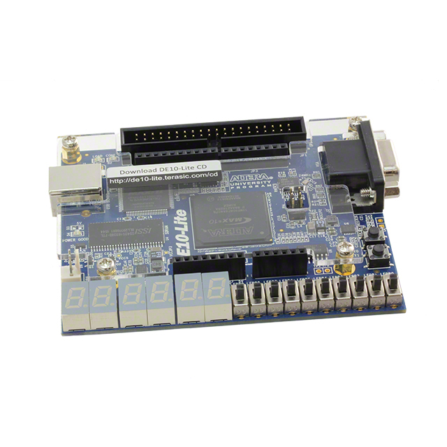

I'm a senior studying computer engineering at the University of Illinois Urbana-Champaign, driven by an unwavering passion for computer architecture. When not immersed in the world of technology, you'll find me honing my skills in table tennis and expressing myself through the art of dance.
Having embarked on internships at Motorols Solutions and Qualcomm, I've delved into embedded software and SoC Design Verification, respectively, actively contributing to real-world projects that blend theory with practice. These experiences have only fueled my fascination with the intricate world of computer architecture and digital hardware.
Beyond my academic pursuits, I find immense joy in exploring the captivating realm where creativity and technology converge. This website is a canvas where my academic prowess, hands-on projects, and dedication to computer architecture come together. Join me on this journey as we delve into the fascinating world of computer engineering, pushing the boundaries of innovation together.
Welcome aboard, and let's embark on this exciting adventure, where technology and creativity dance in harmony!
Click here to learn more about my pipelined RISC-V design!

Click here to learn about my FPGA crossword implementation!
Click here to learn more about my homomorphic encryption hardware accelerator!
Click here to learn more about my OS kernel!
Click here to check out my CUDA implementation of a CNN!
Click here to learn more about my hardware implementation of Wordle!
Click here to learn more about my IoT water system project!
Click here to learn more about my Board Game Recommendation System project!
Motorola Solutions
At Motorola Solutions, I've had the pleasure of working on Android bootloader security for a touchscreen software-defined radio under the mentorship of Donghua Yan for both an internship and mentorship. I used C to implement most of the features.
One core feature of the bootloader which I implemented was the idea of an image preflash validation for different binary image formats as a crucial step to preventing device corruption should it fall into the wrong hands.
Another critical feature I implemented was a dump function, which allows developers to retrieve binary image data straight from the virtual partitions on the device in case the device gets corrupted. It wasn't possible before to view the binary image data from a corrupted partition, and this feature enables the developers to manually check through the image data to find the source of corruption.
In addition to these features, I've also implemented several more to enhance the bootloader's security, and through my time at Motorola Solutions I am thankful to have gained valuable experience in embedded software development in C.
Qualcomm
At Qualcomm, I've had the privelege of diving even deeper into the space of computer engineering and working on a DV project under the mentorship of Alex Valencia and management of Suren Subramanian.
During my time at Qualcomm, I mainly worked on implementing a functional coverage model for the application processor sub-system of a future mobile SoC, allowing for the SoC DV team to ensure high verification quality. I added this model to an already existing special functional coverage framework spearheaded by two of my co-workers which significantly cuts down on coverage collection time across simulation, emulation, and prototyping platforms simultaneously. To complement this functional coverage model, I also wrote a Cadence vPlan to indicate to the DV engineers which bins were of more importance to cover in the verification tests.
As this was my first exploration into the realm of hardware, I learned a great deal about what industry tools and methodologies are used in the process of design verification, especially UVM. In addition, since I spent the duration of the summer working on the application processor sub-system of the SoC, I naturally ended up discovering the complexity behind SoC designs, despite how small of a package they come in, and also learning what sub-systems work together on the chips in the phones we use everyday. This internship brought me one step closer to reaching my goal of being able to say I contributed to the development of something that's used in everyday products.
Resume
To learn more about my work experience across Motorola Solutions and Qualcomm, check out my resume below!
Contact Me
If you have any inquiries about my previous projects or work experience or are interested in hiring me, don't hesitate to reach out by submitting a contact or directly emailing or calling me!